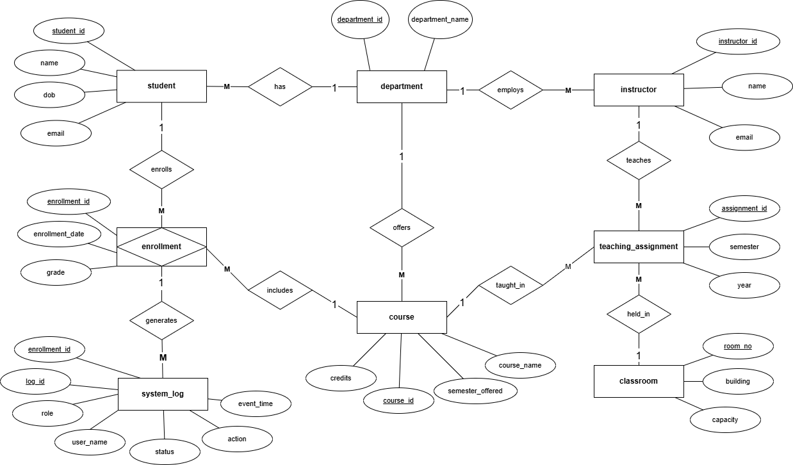

Database Design · ERD · SQL · 2025
Database Normalisation
College Management System
Given a broken database, I identified five categories of design failure and rebuilt the schema from first principles — applying normalisation theory, referential integrity constraints, and structural redesign to produce a database that is consistent, scalable, and audit-ready.
The Problem
The original schema contained five categories of design failure. Department data was stored as plain text in three separate tables — Students, Courses, and Instructors — creating a transitive dependency that violated Third Normal Form (3NF). Two tables lacked primary keys entirely, allowing duplicate records to exist without detection. No foreign key constraints were defined anywhere in the schema, meaning the database could not enforce referential integrity. The classroom table was designed to support only one course per room, which does not reflect how physical spaces are used operationally. The system log table referenced a user identifier linked to no existing table, making the audit trail effectively unreliable.
Schema error analysis — identified and resolved
The Approach
Each flaw was addressed systematically. A dedicated Department table was introduced to resolve the 3NF violation — replacing the text column in three tables with a foreign key reference to a single source of truth. Surrogate primary keys were added to the Enrollments and Teaches tables, renamed using noun convention to enrollment and teaching_assignment. Foreign key constraints were introduced across all related tables. The Classrooms table was restructured to remove the single-course limitation, linking rooms to the teaching_assignment table instead. The system_log table was redesigned to reference the enrollment table, with role and user_name attributes added to support a reliable and auditable activity trail.
Outcome
The redesigned schema was implemented in MySQL Workbench and validated across eight tables within the college_db database. The result is a normalised, integrity-enforced relational structure that eliminates update anomalies, prevents orphan records, and scales cleanly as the institution grows.

Technical Methodology
Academic Context
MBI802: Database Management Systems, Yoobee College of Creative Innovation, Christchurch, New Zealand, 2026.